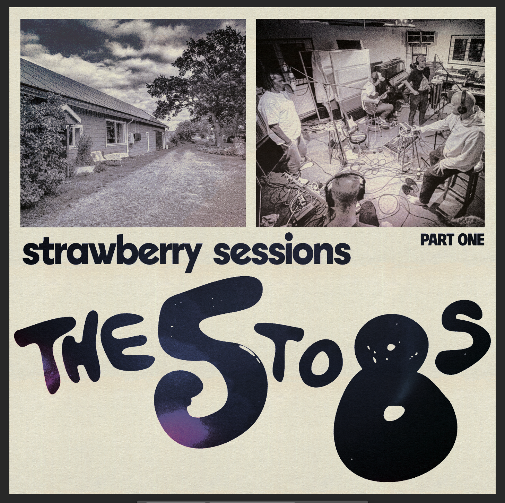

- Date
- Time
- –
- Venue
- Drop Inn, Copenhagen

Mama Odessa “Brown Butter” Jenkins

Big Papa Otis Sugarwell

Uncle Lou Cinnamon Holloway

Sister Mae “Sweet Potato” Robinson
Kitchen Heat Magazine: The 5to8s serve up a feast.
This is music made with love, generous portions, and no shortcuts. Come hungry, leave full, and don’t be surprised if you’re back for seconds.
Verdict: ★★★★★
A homemade feast of funk, soul and hip hop. Catch them live while you still can get a table.

Live Shows
Music


First EP Single
“Into The Blackhole” – The 5to8s
The 5to8s have turned off the kitchen lights. Their debut single is dark funk with a slow, heavy pull: brooding bass, smoky soul vibes, and hip hop twist just when you think you know where they’re headed. It’s moody and vibey, and never predictable. You don’t just listen to this track, you get sucked in. Fair warning: there’s no coming back out.

About
There are bands that play music, and then there are bands that cook it. The 5to8s belong firmly in the second category. Eight musicians squeezed onto one stage, and somehow nobody steps on anyone’s toes. Instead, they stir.
Their sound is best described the way the band describes it themselves: a cookpot full of mama’s veggies and spices. Funk forms the hearty base, all fat basslines and tight-as-a-lid drum grooves. Soul simmers through the middle, warm horns and vocals that feel like a hand on your shoulder. And hip hop is the spice that makes your eyes water in the best possible way: sharp verses, swagger, and beats that hit just a little harder than you expected.
What makes The 5to8s special isn’t just the ingredients, it’s the timing. They know exactly when to let a groove bubble quietly and when to turn up the heat until the whole room is boiling over. By the third song at their last show, the crowd had stopped being an audience and started being part of the recipe, dancing, shouting back hooks, and refusing to let them leave the stage.
-

Hannibal Gustafsson
“Hanni Hollandaise”
Guitar
-

Jonas Winge Leisner
“Sweet Chicken Wings”
Vocals
-

Minh Lê-Shingara
“Pressure Cooker”
Drums / Cook Pots
-

Phong Lê
“Five Spice”
Keys
-

Mogens Palsbøll
“Gravy Train”
Bass
-

Daniel Fridell
“Doctor Dumpling”
Keys
-

Kuku Agami
“Papa Jollof”
Rap
-

Jonas Rendbo
“Renny Roux”
Vocals